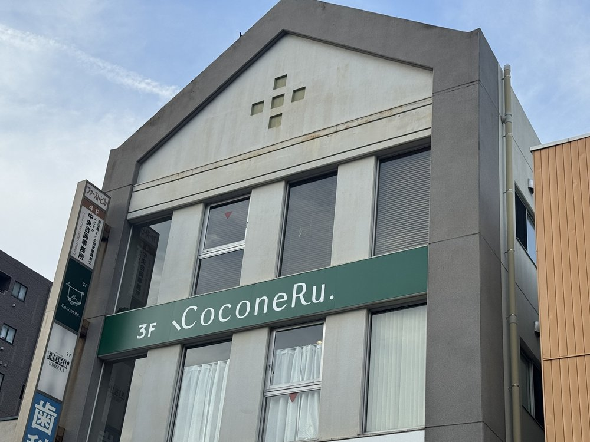
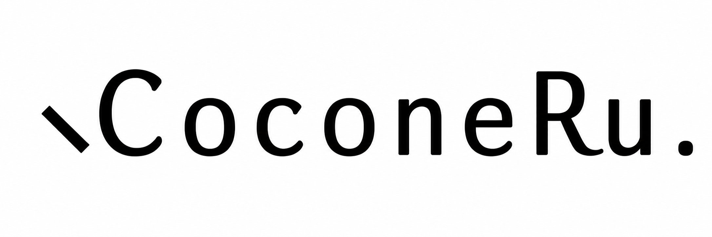
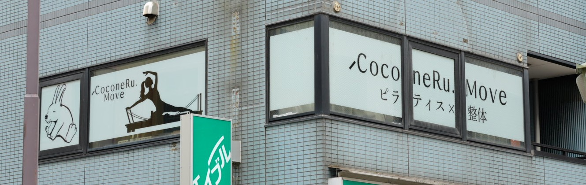

Head Spa
CoconeRu.
- 住所
- 〒238-0007 神奈川県横須賀市若松町3丁目4 ファーストビル3F
- 最寄り
- 京急「横須賀中央駅」徒歩4分
- 営業時間
- 10:00-20:00
- 定休日
- 不定休
Access
ヘッドスパもMoveも、京急「横須賀中央駅」から徒歩4分。モアーズや中央大通りの商店街もすぐの通いやすい立地です。ただし2店は所在地が異なります。
CoconeRu.は、京急「横須賀中央駅」から徒歩4分の場所にある2つの店舗です。若松町のファーストビル3Fが睡眠特化のドライヘッドスパ「CoconeRu. Head Spa」、大滝町のヤシマビル2Fが整体×ピラティスのパーソナルスタジオ「CoconeRu. Move」。営業時間はどちらも10:00-20:00、ご予約制で、男女どちらもご利用いただけます。目的に合わせて、2店を使い分けてお選びください。


Head Spa

Move
CoconeRu.の2店は、いずれも横須賀中央駅から徒歩4分ほどの中心街にあります。ただしHead Spa（若松町）とMove（大滝町）は駅からの方向が異なるため、お越しの際は先に目的の店舗の地図をご確認ください。どちらも買い物や食事のついでに立ち寄りやすく、初めての方でも迷いにくい場所です。
Head Spa / 若松町
ビル3Fの照明を落とした静かな空間で受けるドライヘッドスパ。髪を濡らさず、頭・首・肩のこわばりをヘッドマッサージのようにゆっくりほぐし、眼精疲労やスマホ疲れをやわらげ、深い休息へと導きます。横須賀中央でマッサージのように頭を休めたい方の、大人の隠れ家です。Head Spaについて／メニュー・料金／よくある質問
English-friendly: CoconeRu. is a 4-minute walk from Keikyu Yokosuka-chuo Station, near Yokosuka Naval Base. We offer a dry head spa (head massage) and personal training / pilates, open 10:00-20:00. Please reserve online in advance.